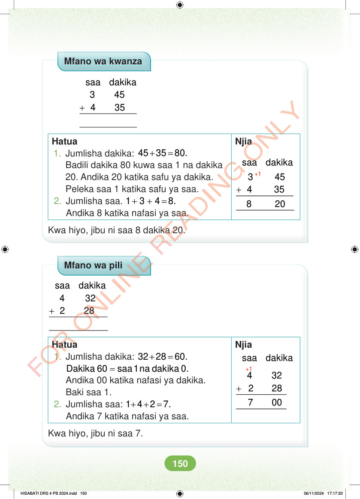

<!DOCTYPE html>
<html lang="sw-TZ"><head><meta charset="utf-8"><meta name="viewport" content="width=device-width,initial-scale=1">
<title>Hisabati: Kitabu cha Mwanafunzi Darasa la Nne</title>
<meta name="title-id" content="pg156_sec001"><meta name="page-section-id" content="164">
<link href="./content/tailwind_output.css" rel="stylesheet"><link href="./assets/libs/fontawesome/css/all.min.css" rel="stylesheet"><link href="./assets/fonts.css" rel="stylesheet">
<style>body{margin:0;background:#eef1ed}main{width:100%;display:flex;justify-content:center;padding:1rem 1rem 5rem;box-sizing:border-box}#content{width:100%;display:flex;justify-content:center}.pdf-page{position:relative;width:min(calc(100vw - 2rem),56rem);aspect-ratio:540.8980102539062/750.6610107421875;background:white;box-shadow:0 4px 24px #0002;overflow:hidden}.pdf-page img{position:absolute;inset:0;width:100%;height:100%;object-fit:fill}</style>
</head><body><main><h1 class="sr-only" id="page-heading">Ukurasa wa 156</h1><div id="content" class="opacity-0"><section role="article" data-section-type="pdf_accessible_page" data-section-id="pg156_sec001" aria-labelledby="page-heading" class="pdf-page"><p class="sr-only" data-id="pg156_gp001_tx001">Mfano wa kwanza + saa dakika 3 45 4 35 Hatua Njia +1 saa dakika + 3 45 4 35 8 20 1. Jumlisha dakika: + = 45 35 80. Badili dakika 80 kuwa saa 1 na dakika 20. Andika 20 katika safu ya dakika. Peleka saa 1 katika safu ya saa. 2. Jumlisha saa. + + = 1 3 4 8. Andika 8 katika nafasi ya saa. Kwa hiyo, jibu ni saa 8 dakika 20. Mfano wa pili + saa dakika 4 32 2 28 Hatua Njia +1 saa dakika + 4 32 2 28 7 00 1. Jumlisha dakika: + = 32 28 60.  = Dakika 60 saa 1na dakika 0. Andika 00 katika nafasi ya dakika. Baki saa 1. 2. Jumlisha saa: + + = 1 4 2 7. Andika 7 katika nafasi ya saa. Kwa hiyo, jibu ni saa 7. HISABATI DRS 4 PB 2024.indd 150 HISABATI DRS 4 PB 2024.indd 150 06/11/2024 17:17:30 06/11/2024 17:17:30</p></section></div></main><div class="relative z-50" id="interface-container"></div><div class="relative z-50" id="nav-container"></div><script src="./assets/offline-preloader.js"></script><script src="./assets/scorm.js"></script><script src="./assets/base.bundle.local.js"></script></body></html>